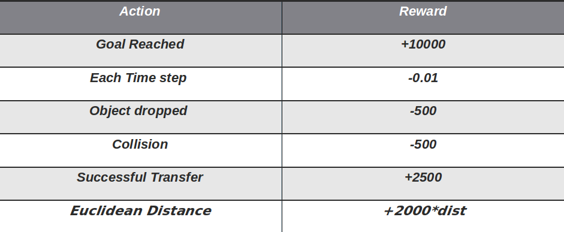
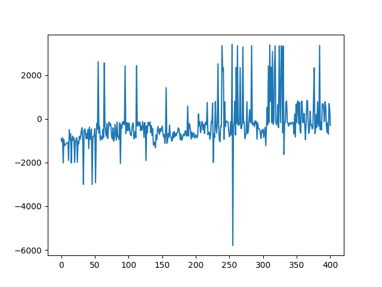
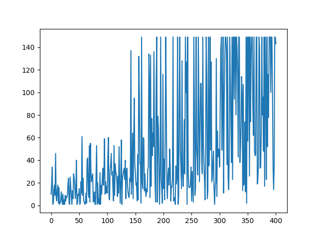
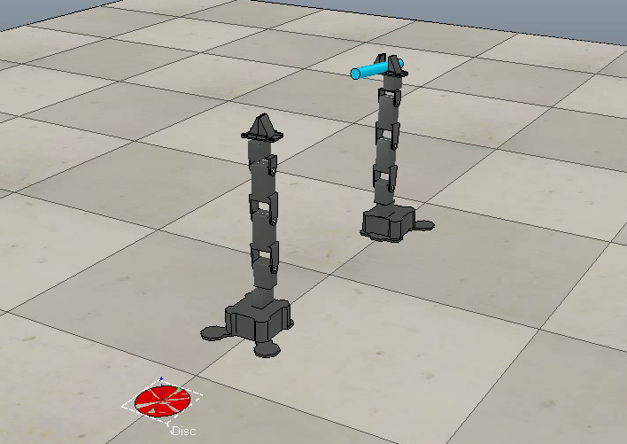
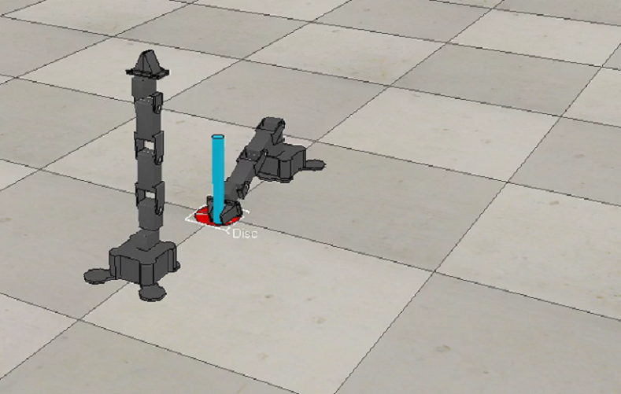
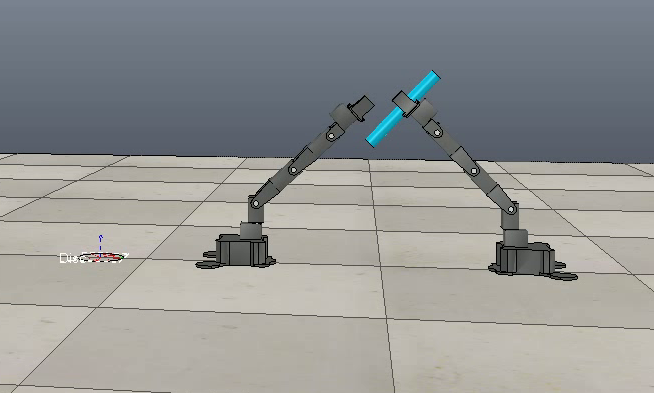
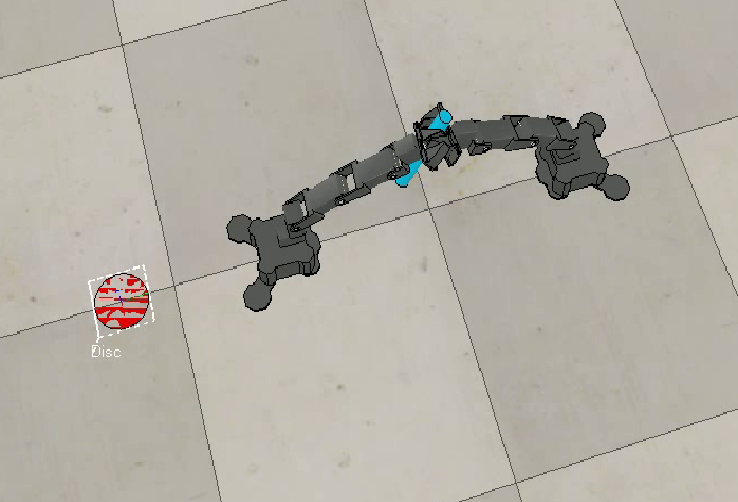
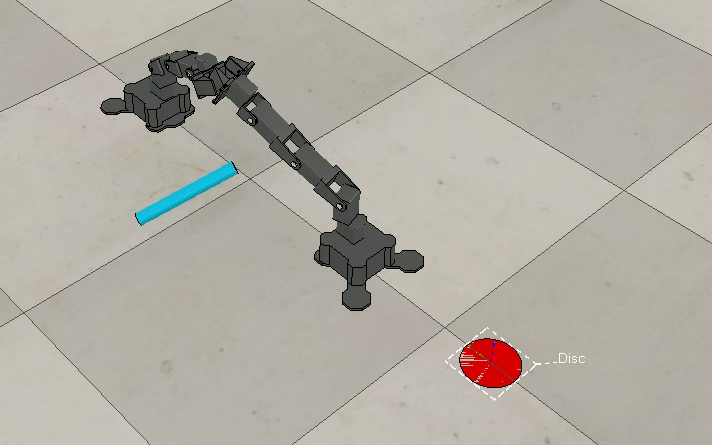

OCTOBER 2017 - PRESENT | WPI | Prof. Carlos Morato
OBJECTIVE
Achieve mid-air robot to robot object transfer and placement at target location via Deep Reinforcement Learning using a single RL agent that drives the two manipulator arms.
RESEARCH ASPECTS
• Phantom X Pincher manipulator arms were used for simulation
• Deep Q-Learning was used to solve the problem of large Q-tables that native Q-Learning can't deal with
• Experience Replay with 128 sample experiences from memory of 3000 was used to train the DQN agent
• To prevent random sampling from skipping over important events which must be learned as soon as they happen, our training mini-batch composed of 10 recent and 118 random instances from memory
• Taking the best action (with marginally higher Q-value) resulted in a single robot acting over and over again while the next best action was neglected
• So, top two actions were taken at every time step to bring both robots into action.

REWARD STRUCTURE FOR THE AGENT
METHODOLOGY
Our choice of simulator is V-REP by Coppelia Robotics to implement our experiment. V-REP’s Python remote API client provides programmatic access to the simulator. Keras provides a convenient way to design complex neural networks easily. We used Keras with TensorFlow as the backend. We developed our own wrapper around V-REP’s Python Remote API functions called vreppy which provides a simple interface between Python codes and V-REP. Using vreppy, we can load scenes, robot models, access joints, start simulations and more
The two PhantomX Pincher manipulators together have 10 active joints in all. Considering two actions for each joint and a do - nothing action, we end up with a total of 21 actions. Our 21-dimensional action space is discrete, with a discretization of 4◦ for revolute joints. We build our Markov state as a combination of 10 joint values and 3 object coordinates, resulting in a 13-dimensional state space. Using a DQN allows us to have a continuous state space, which can account for environment noise and limitations of simulation environment.
We use Deep Q Network (DQN) for our RL agent as this allows a continuous state space and a discrete action space which fits perfectly with our setup.
Our neural network comprises of 4 hidden layers (32, 64, 64, 32) with a dropout of 0.15 on each layer and a ReLU activation for each layer.
We use an Adam optimizer with a learning rate of 0.0005 and Mean Squared Error (MSE) as the loss function.
RESULTS
• Custom setup of the V-REP scene using own wrapper was achieved
• Subtask 1: One manipulator achieving the task of placing the object to desired location without the second one was done
• Subtask 2: Mid-air object transfer was almost achieved with some errors due to the limitations of computation power
• Complete task where the robot achieves the two subtasks together is underway


EPISODE SCORES vs. EPISODES | TIME-STEPS vs EPISODES
GALLERY
    